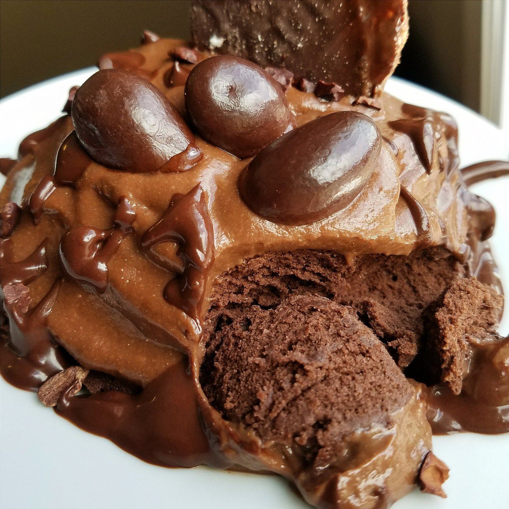
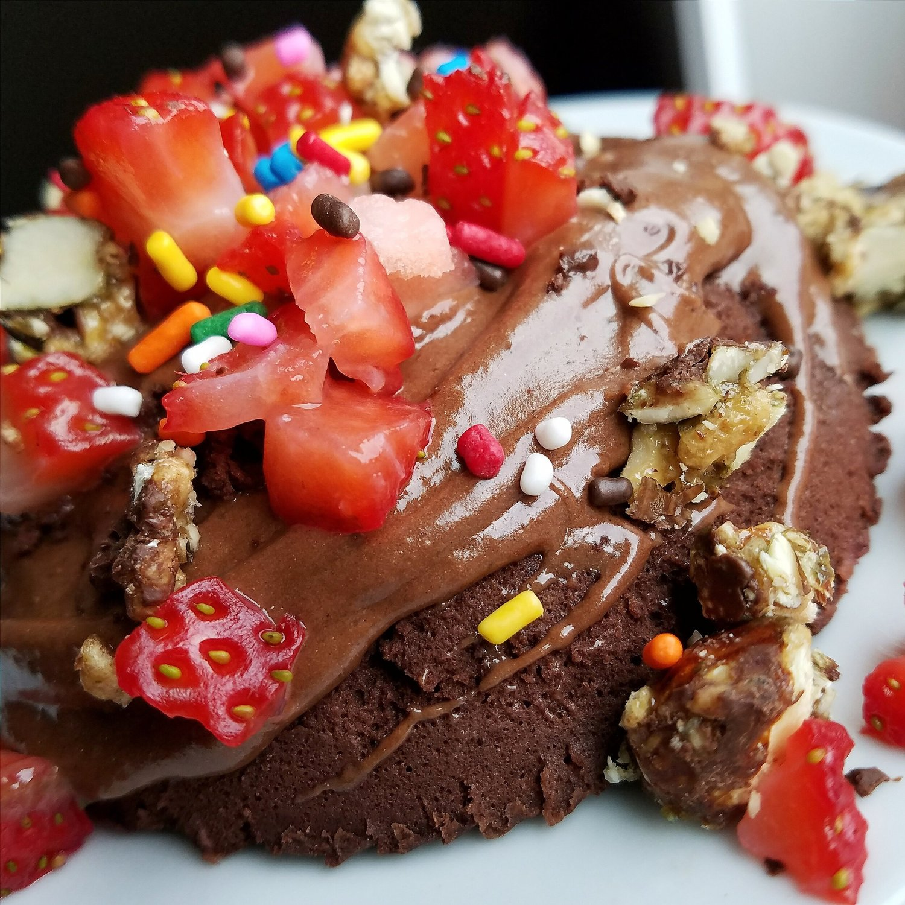

Vegan Chocolate Mugcake (gluten free)


Today's meal brought to you by the color - Chocolate. Is that a color? Yes, it sure is. This easy 1 minute vegan chocolate mugcake tastes just like store bought chocolate cupcakes. The difference? This recipe is vegan, gluten free, and sugar free. Enjoy a quick snack or dessert without requiring much time out of your day!
I've made this recipe 3 times in 4 days! I've done a few combinations, but the best by far is chocolate everythaaaang. I think what takes this recipe over the top is the addition of the chocolate protein icing. I used Dutch chocolate Juice Plus vegan protein (just got this recently to try!) and only mixed it with water. I don't get how it's so sweet! In the all chocolate version, I also added cacao nibs, a chocolate sauce (unsweetened cocoa, stevia, and water), chocolate covered almonds (dangerously addictive), and a chocolate rice cake. Good lord.
I also did a chocolate strawberry variety for a hint of fruity goodness! I topped the mugcake with the beloved chocolate icing, strawberries, and sprinkles! Woooo it's a party.
This mugcake is so fluffy and delicately delicious. The buckwheat flour is the key!! I know a lot of people question how essential of an ingredient buckwheat flour is in my recipes.. Just buy it already. It's worth it, and it's not expensive. It's sooo unique and also a great gluten free flour - really this recipe is pointless without the buckwheat flour. Just try to trust me on this one!
I'm not always the biggest chocolate lover, but this vegan chocolate mugcake recipe has me going chocolate crazy!! Everything's just too perfect. It's vegan, gluten free, and sugar free. A healthy single serve cake alllll for me to enjoy. :) Try this out and let me know what you think!
Vegan Chocolate Mugcake (gluten free)
Serves: 1
-
1/4 cup buckwheat flour
-
2 TBSP unsweetened cocoa powder
-
1/3 cup unsweetened almond milk
-
1/4 tsp baking powder
-
1 stevia packet
Mix all the ingredients evenly. Pour in a small bowl or mug. Microwave for 60 seconds, and that's it!!!
The icing I've been making uses Dutch Chocolate flavor of juice plus brand vegan protein mixed with water. It tastes soooo good - like the chocolate part of an oreo. I didn't expect it to be so good, and the duo of the cake with icing is like store-bought cupcakes!